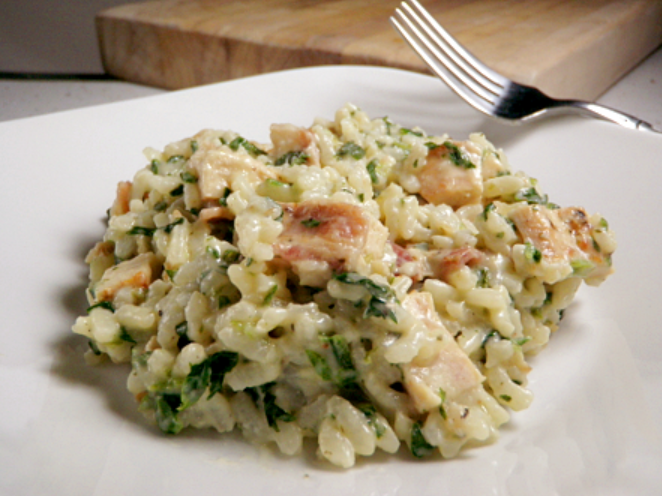

Making risotto
How to make risotto, a northern Italian rice dish cooked with broth until it reaches a creamy consistency. The broth can be derived from meat, fish, or vegetables.
The dish requires a little attention and stirring, but at its core, it’s really just rice and broth.
Ensure you have the following ingredients to hand before you begin.
- 32 ounces unsalted chicken stock, warmed
- 1 tablespoon unsalted butter
- 1 tablespoon olive oil
- 1 cup Arborio rice
- 1/4 teaspoon kosher salt
- 1/4 cup freshly grated Parmigiano-Reggiano or Pecorino-Romano cheese 
- Bring stock to a simmer in a saucepan over medium. Reduce heat and keep warm.
- Melt the butter and heat the oil in a large skillet or wide-bottomed pot. Add the rice; stir to coat all the grains, 1 minute. Add 1 ladle of broth (½ cup to ¾ cup), stir, and leave it alone until broth is nearly absorbed, 2 to 3 minutes.
- Stir, add another ladle of broth, and stir again. Cook undisturbed until the broth is absorbed, 3 minutes. Repeat until about 1 ladle of broth remains, 15 to 18 minutes of total cook time for the rice. Turn off heat.
- Add salt, remaining broth, and cheese. Stir gently for 2 minutes. Serve immediately in warmed bowls, with more grated cheese over top, if desired.